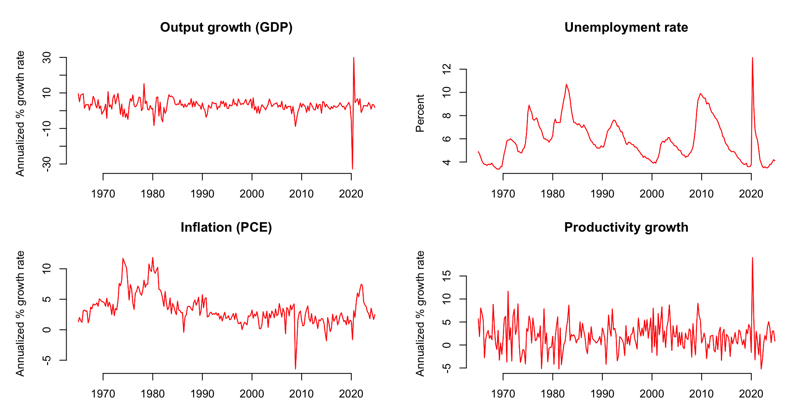
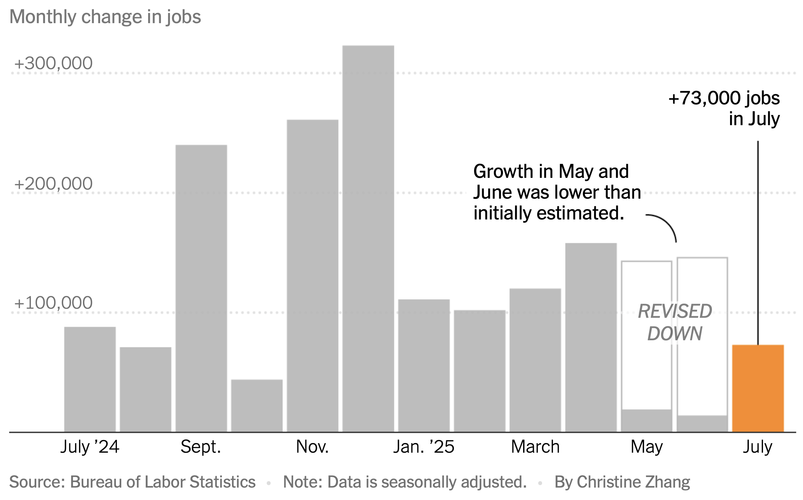
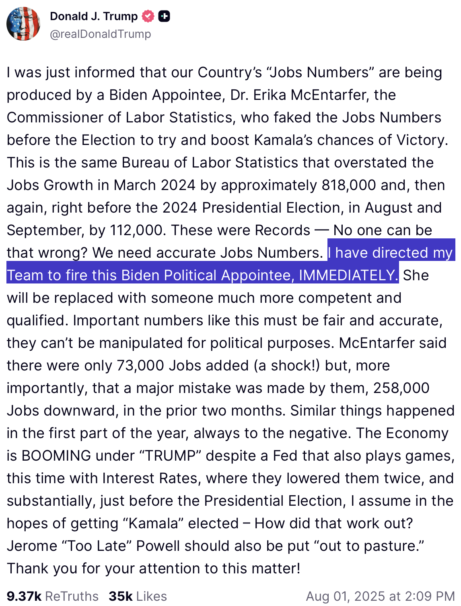
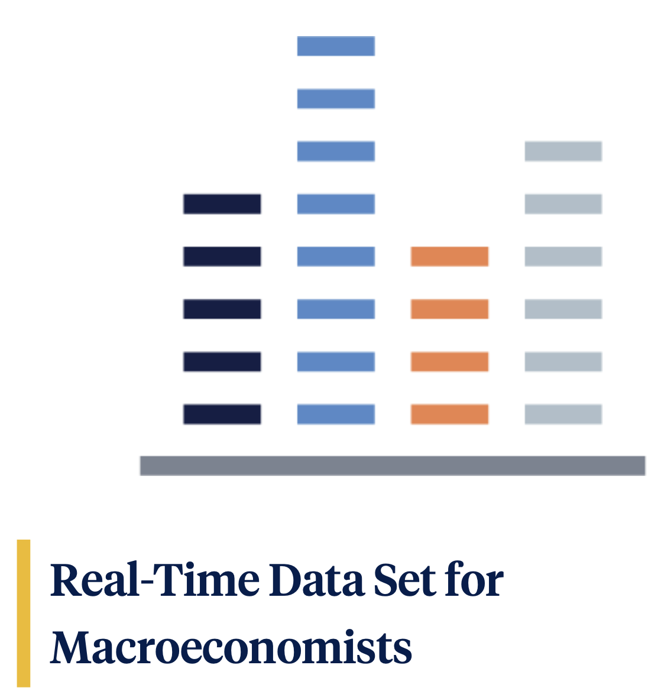
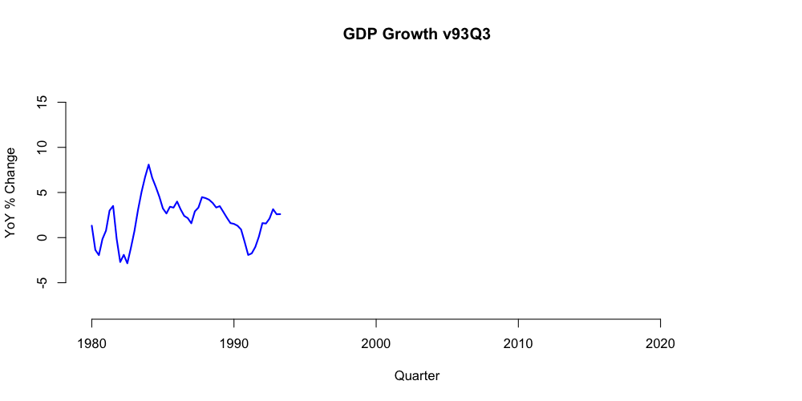
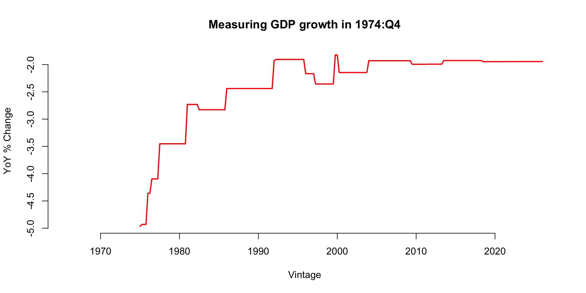
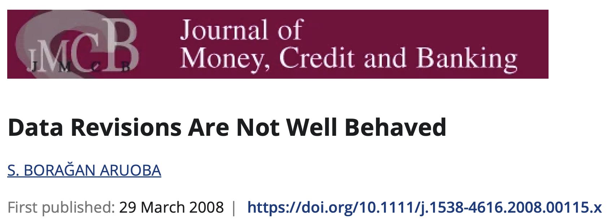
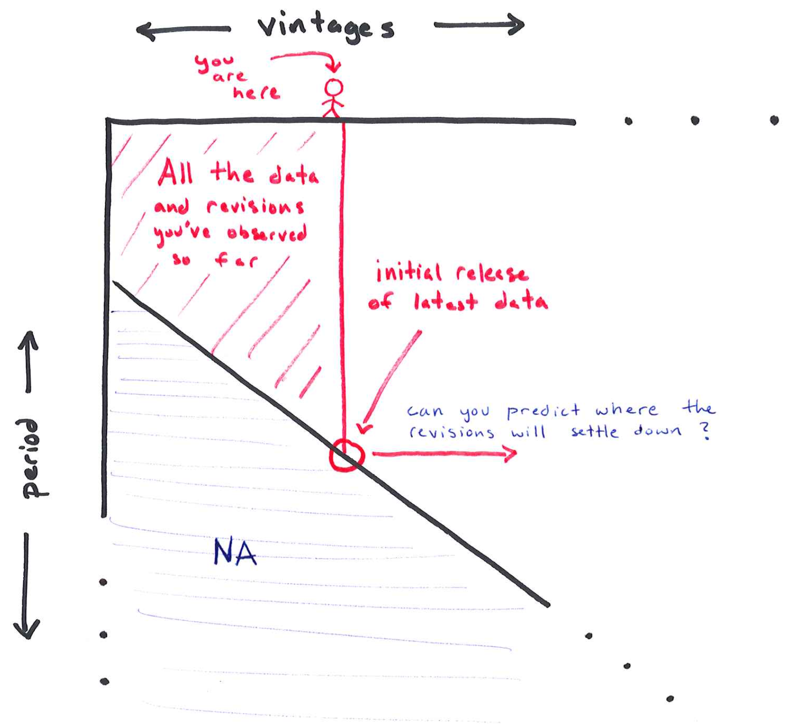
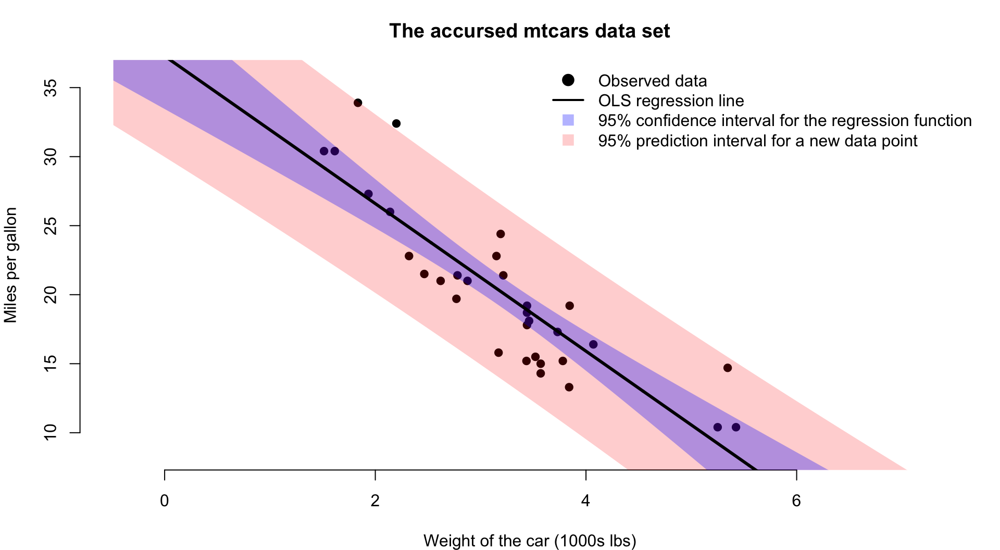

Case Study 2
Revisions to macroeconomic data
Ed Iversen and John Zito
Duke University
STA 440 Spring 2026
Macroeconomic data
\[ \newcommand{\iid}{\overset{\textrm{iid}}{\sim}} \newcommand{\indep}{\overset{\textrm{indep}}{\sim}} \newcommand{\tr}{{\scriptscriptstyle\mathsf{T}}} \newcommand{\com}{,\,} \newcommand{\BX}{\mathbf{X}} \newcommand{\BH}{\mathbf{H}} \newcommand{\BY}{\mathbf{Y}} \newcommand{\Bx}{\mathbf{x}} \newcommand{\By}{\mathbf{y}} \newcommand{\Btheta}{\boldsymbol{\theta}} \newcommand{\Bepsilon}{\boldsymbol{\varepsilon}} \newcommand{\Bbeta}{\boldsymbol{\beta}} \newcommand{\Bzero}{\mathbf{0}} \newcommand{\Bone}{\mathbf{1}} \newcommand{\N}{\text{N}} \newcommand{\dd}{\text{d}} \]
A few US macro aggregates
There are tons more. Play around on FRED!
Where do these data come from?
Bureau of Labor Statistics (under the Labor Department)
Bureau of Economic Analysis (under the Commerce Department)
There are 13 principal statistical agencies in the US federal government.
Who cares?
These are some of the most talked about data in the world. They are constantly being studied by…
| Academics | “how does the macroeconomy…work?” |
| Policymakers | “what effect did our actions have?” |
| Businesses | “how do we plan for the future?” |
| Journalists | each new release is a major headline… |
| Investors | …followed by a second headline about how the stock and bond markets reacted. |
Did I leave anybody out?
Oh, right.
What happened?
At 8:30 AM ET on Friday August 1, 2025, the BLS issued its regular monthly report on the US employment situation;
-
It includes total nonfarm payroll employment:
a measure of the number of U.S. workers in the economy that excludes proprietors, private household employees, unpaid volunteers, farm employees, and the unincorporated self-employed. This measure accounts for approximately 80 percent of the workers who contribute to Gross Domestic Product (GDP). This measure provides useful insights into the current economic situation because it can represent the number of jobs added or lost in an economy.
Presidents want to take credit for this going up each month.
What happened?
The August 1 report announced the initial release of the July numbers, as well as revisions to the May and June numbers:

What happened?
The Commissioner of Labor Statistics was fired that afternoon:

Revisions?
Whence revisions?
The statistical agencies announce an initial estimate with a one period lag, but they continue to revise the measurement (sometimes years later) as new information arrives and measurement techniques improve.
From the BLS report (and more here):
Monthly revisions result from additional reports received from businesses and government agencies since the last published estimates and from the recalculation of seasonal factors.
From Ben Casselman at the New York Times:
The monthly numbers are based on a huge survey of businesses and other employers. Not all businesses respond in time for the initial estimate, however, forcing government statisticians to fill in the gaps with a statistical technique that essentially assumes the businesses that didn’t respond behaved the same way as the ones that did. That approach works fine during normal times. But during periods of rapid change, that assumption can be misleading.
FRBP’s Real-Time Data Set

Tracks the entire history of revisions for key macroeconomic variables.
What are these data like?
Quarterly GDP growth (year-over-year percent change):
# A tibble: 244 × 10
DATE v65Q4 v66Q1 v66Q2 v66Q3 v66Q4 v67Q1 v67Q2 v67Q3 v67Q4
<chr> <dbl> <dbl> <dbl> <dbl> <dbl> <dbl> <dbl> <dbl> <dbl>
1 1965:Q1 5.36 5.40 5.40 5.37 5.37 5.37 5.37 5.32 5.32
2 1965:Q2 4.43 4.79 4.79 5.14 5.14 5.14 5.14 5.38 5.38
3 1965:Q3 4.55 5.22 5.22 5.68 5.68 5.68 5.68 5.96 5.96
4 1965:Q4 NA 6.33 6.79 7.49 7.49 7.49 7.49 7.80 7.80
5 1966:Q1 NA NA 6.04 6.70 6.70 6.70 6.70 7.30 7.30
6 1966:Q2 NA NA NA 5.99 5.87 5.87 5.87 6.49 6.49
7 1966:Q3 NA NA NA NA 5.26 5.13 5.13 5.49 5.49
8 1966:Q4 NA NA NA NA NA 4.09 4.12 4.21 4.21
9 1967:Q1 NA NA NA NA NA NA 2.61 2.37 2.37
10 1967:Q2 NA NA NA NA NA NA NA 2.36 2.37
# ℹ 234 more rowsA single variable gets a whole data frame with an upper triangular structure:
- row = what period are measuring?
- column = when were we measuring it?
What are these data like?
Quarterly GDP growth (year-over-year percent change):
# A tibble: 1 × 2
DATE v66Q3
<chr> <dbl>
1 1965:Q3 5.68This is our estimate of GDP growth in 1965:Q3 as measured a year later in 1966:Q3.
Columns are vintages
Quarterly GDP growth (year-over-year percent change):
# A tibble: 304 × 2
DATE v66Q3
<chr> <dbl>
1 1950:Q1 4.65
2 1950:Q2 8.06
3 1950:Q3 11.3
4 1950:Q4 14.5
5 1951:Q1 10.4
6 1951:Q2 9.47
7 1951:Q3 7.14
8 1951:Q4 5.03
9 1952:Q1 4.43
10 1952:Q2 2.12
# ℹ 294 more rowsThis column is the 1966:Q3 vintage of the data. This is history as it was understood in 1966:Q3.
Rows are the history of revisions
Quarterly GDP growth (year-over-year percent change):
# A tibble: 1 × 11
DATE v65Q4 v66Q1 v66Q2 v66Q3 v66Q4 v67Q1 v67Q2 v67Q3 v67Q4 v68Q1
<chr> <dbl> <dbl> <dbl> <dbl> <dbl> <dbl> <dbl> <dbl> <dbl> <dbl>
1 1965:Q3 4.55 5.22 5.22 5.68 5.68 5.68 5.68 5.96 5.96 5.96How did our measurement for 1965:Q3 evolve over time as it was revised?
In My Life
Moving across the columns:

The path of revisions
Moving across a fixed row:

How do data revisions behave?
Good heavens

How do data revisions behave?
We document the empirical properties of revisions to major macroeconomic variables in the United States. Our findings suggest that they do not satisfy simple desirable statistical properties. In particular, we find that these revisions do not have a zero mean, which indicates that the initial announcements by statistical agencies are biased. We also find that the revisions are quite large compared to the original variables and they are predictable using the information set at the time of the initial announcement, which means that the initial announcements of statistical agencies are not rational forecasts.
Bummer.
This is probably getting worse
Federal statistical agencies have faced mounting challenges in recent years as Americans have become more reluctant to respond to the surveys that are the basis for much of the nation’s economic data. Shrinking budgets have made it harder to make up for falling response rates, and to develop new approaches to replace surveys altogether.
Source: New York Times.
Case Study 2
Picture this
Imagine you work at the Federal Reserve, or the Congressional Budget Office, or Goldman Sachs, or The Wall Street Journal. Your boss taps you on the shoulder and says:
We just got an unexpected data release, but we know it will be revised. And in general, I’m sick of this crap where the numbers swing around for months after the fact and we don’t know where we stand. Can you develop a model that can predict where the measurement will settle after the revisions are done?
Your task
Data: the full set of historical vintages for several macro variables.
Each team will be assigned a target variable. Then:
- Develop a model that can predict the final release of the variable using only information available at the time of the initial release;
- treat the vintage three years later as the final release;
- Use the other variables as predictors if you want;
- Produce a method with good historical performance averaged over time;
- You must quantify uncertainty. Point predictions are not enough. You need to produce and evaluate full predictive distributions that incorporate as many sources of uncertainty as possible.
Your task
Given the latest release and everything that’s come before, can you predict where the revisions will ultimately settle down?

Deadlines
- EDA presentations (Wed 2/11):
- the usual plots and summaries to get a feel and motivate your analysis;
- hit the books and teach the class how your assigned variable is actually measured, and what goes on during the revision process;
- Analysis presentations (Wed 2/18):
- what models did you consider?
- how did their predictive accuracy compare?
- can you interpret why the models performed the way they did?
- Final submission (Mon 2/23).
Lecture topics
A crash course in time series:
- Autoregressive moving average (ARMA) models;
- Dynamic linear models (DLMs);
- Probabilistic prediction;
- Time series cross-validation (“leave-future-out”).
You may not ultimately choose to use these specific models, but the evaluation techniques are model-agnostic.
Words of caution
- The data come in this funky, unfamiliar form: each variable gets its own data frame with this triangular structure (row = period being measured; column = vintage). How are you going to deal with that?
- When you generate a prediction, make sure you are conditioning only on information that would have been available at that time!
- There already exists a massive literature on this, which you are welcome to explore. However, you will quickly become overwhelmed if you’re not careful. That’s part of the challenge!
- Black box machine learning methods may or may not work well here, but if you don’t know how to get predictive uncertainty quantification from them, or you find that the UQ is unreliable, then say goodbye to
XGBoost!
Probabilistic prediction
Not just point prediction

Point prediction
Your single-number best guess at tomorrow’s observation:

Prediction interval
A range of likely values for tomorrow’s observation:

Prediction distribution (density)
Full distribution capturing uncertainty about tomorrow:

And then tomorrow finally comes
So…how’d we do? Any ideas?

What’s the point?
We want intervals and densities to communicate uncertainty about the prediction;
-
What sources of uncertainty?
- Data uncertainty (data are realization of random process);
- Parameter estimation uncertainty;
- Hyperparameter tuning uncertainty;
- Model uncertainty;
- Uncertainty introduced by missing data;
- What else?
Newsflash: you have seen this before.
Regression 101: interval estimation
Remember this picture?

Regression 101
Recall the simple linear model:
\[ \begin{aligned} y_i&=\mu(x_i)+\varepsilon_i=\beta_0+\beta_1x_i+\varepsilon_i, && \varepsilon_i\iid\N(0\com\sigma^2)\\ \end{aligned} \]
The OLS estimators are:
\[ \begin{aligned} \hat{\beta}_1 &= \frac{\sum_{i=1}^n(x_i-\bar{x})(y_i-\bar{y})}{S_{xx}},&&S_{xx}=\sum\limits_{i=1}^n(x_i-\bar{x})^2 \\ \hat{\beta}_0 &= \bar{y}-\bar{x}\hat{\beta}_1 \\ \hat{\mu}(x) &= \hat{\beta}_0+\hat{\beta_1}x \\ \widehat{\sigma^2} &= \frac{1}{n-2}\sum\limits_{i=1}^n[y_i-\hat{\mu}(x_i)]^2. \end{aligned} \]
The main idea of classical statistics: estimators are random variables as a function of the data. Estimation uncertainty comes from the sampling process.
Sampling distributions
You can show that the sampling distributions are independent, and
\[ \begin{aligned} \begin{bmatrix} \hat{\beta}_0 \\ \hat{\beta}_1 \end{bmatrix} &\sim \text{N}_2\left(\begin{bmatrix}\beta_0\\\beta_1\end{bmatrix} \com \sigma^2 \begin{bmatrix} \frac{1}{n}+\frac{\bar{x}^2}{S_{xx}}&-\bar{x}/S_{xx}\\-\bar{x}/S_{xx}&1/S_{xx} \end{bmatrix}\right) \\ \widehat{\sigma^2} &\sim \text{Gamma}\left(\frac{n-2}{2}\com\frac{n-2}{2\sigma^2}\right) . \end{aligned} \]
The estimator of the regression function is the sum of two correlated Gaussian terms, so it stays normal, you add the means, and you add the variances, adjusting for the covariance:
\[ \hat{\mu}(x)=\hat{\beta}_0+\hat{\beta_1}x\sim\N\left(\beta_0+\beta_1x\com \sigma^2\left[\frac{1}{n}+\frac{(x-\bar{x})^2}{S_{xx}}\right]\right) \]
Take my word for it!
The confidence interval for the line
A tale of two pivots:
\[ \frac{\hat{\mu}(x)-\mu(x)}{\sigma\sqrt{\frac{1}{n}+\frac{(x-\bar{x})^2}{S_{xx}}}} \sim\N(0\com 1) \quad\implies\quad \frac{\hat{\mu}(x)-\mu(x)}{\hat{\sigma}\sqrt{\frac{1}{n}+\frac{(x-\bar{x})^2}{S_{xx}}}} \sim t_{n-2}. \]
So we can use quantiles of the \(t\) distribution to get an exact interval for the unknow regression function at a new \(x\):
\[ \hat{\mu}(x)\pm t^\star_{n-2}\times \hat{\sigma}\sqrt{\frac{1}{n}+\frac{(x-\bar{x})^2}{S_{xx}}}. \]
This quantifies frequentist sampling uncertainty for the regression line.
The predictive pivot
If a new \(\tilde{x}\) joins the party, we have
- \(\tilde{y}\sim\text{N}(\mu(\tilde{x})\com\sigma^2)\);
- \(\hat{\mu}(x)\sim\N\left(\mu(\tilde{x})\com \sigma^2\left[\frac{1}{n}+\frac{(x-\bar{x})^2}{S_{xx}}\right]\right)\);
- These are independent.
Their difference is normal, and you subtract the means and add the variances:
\[ \begin{aligned} \hat{\mu}(\tilde{x})-\tilde{y} &\sim\N\left(\mu(\tilde{x})-\mu(\tilde{x})\com \sigma^2\left[\frac{1}{n}+\frac{(\tilde{x}-\bar{x})^2}{S_{xx}}\right]+\sigma^2\right) \\ &\sim\N\left(0\com \sigma^2\left[1+\frac{1}{n}+\frac{(\tilde{x}-\bar{x})^2}{S_{xx}}\right]\right). \end{aligned} \]
The prediction interval for a new observation
A tale of two more pivots:
\[ \frac{\hat{\mu}(\tilde{x})-\tilde{y}}{\sigma\sqrt{1+\frac{1}{n}+\frac{(\tilde{x}-\bar{x})^2}{S_{xx}}}} \sim\N(0\com 1) \quad\implies\quad \frac{\hat{\mu}(\tilde{x})-\tilde{y}}{\hat{\sigma}\sqrt{1+\frac{1}{n}+\frac{(\tilde{x}-\bar{x})^2}{S_{xx}}}} \sim t_{n-2}. \]
Exact prediction interval for a yet-to-be-observed \(\tilde{y}\):
\[ \hat{\mu}(\tilde{x})\pm t^\star_{n-2}\times \hat{\sigma}\sqrt{1+\frac{1}{n}+\frac{(\tilde{x}-\bar{x})^2}{S_{xx}}}. \]
This is wider than the confidence interval because the inherent random sampling of the new \(\tilde{y}\) (its \(\tilde{\varepsilon}\)) adds a second source of uncertainty.
Comparison
Confidence interval for \(\mu(\tilde{x})\).
\[ \hat{\mu}(\tilde{x})\pm t^\star_{n-2}\times \hat{\sigma}\sqrt{\frac{1}{n}+\frac{(\tilde{x}-\bar{x})^2}{S_{xx}}}. \]
One source of uncertainty:
- estimation uncertainty from \(\hat{\beta}\).
Prediction interval for \(\tilde{y}\).
\[ \hat{\mu}(\tilde{x})\pm t^\star_{n-2}\times \hat{\sigma}\sqrt{1+\frac{1}{n}+\frac{(\tilde{x}-\bar{x})^2}{S_{xx}}}. \]
Two sources of uncertainty:
- estimation uncertainty from \(\hat{\beta}\);
- new \(\tilde{\varepsilon}\). That’s where we picked up the extra 1 in the standard error.
So the PI is wider than the CI
Behold:
Hence the famous picture

Bayes 101: posterior predictive distribution
The posterior for parameters:
\[ p(\boldsymbol{\theta}\mid y_{1:n}) = \frac{p(y_{1:n}\mid \boldsymbol{\theta})p(\boldsymbol{\theta})}{p(y_{1:n})}. \]
The posterior for a new observation:
\[ p(\tilde{y}\mid y_{1:n})=\int p(\tilde{y}\mid \boldsymbol{\theta})p(\boldsymbol{\theta}\mid y_{1:n})\,\text{d}\boldsymbol{\theta} . \]
Similar to before, it incorporates parameter uncertainty from the posterior and inherent randomness of new \(\tilde{y}\) from the likelihood.
Example: linear regression, again
Consider linear regression where the prior \(p(\sigma^2\com\Bbeta)\) is conjugate:
\[ \begin{aligned} \sigma^2 &\sim \text{IG}(a_0\com b_0) \\ \Bbeta\mid \sigma^2 &\sim \text{N}_{p}(\bar{\Bbeta}_0\com\sigma^2\BH^{-1}_0) \\ y_i \mid \Bx_i \com \Bbeta\com\sigma^2 &\iid \text{N} \left( \Bx_i^\tr\Bbeta\com\sigma^2 \right). \end{aligned} \]
Without revisiting the pain and tedium of the calculation, the posterior \(p(\sigma^2\com\Bbeta\mid y_{1:n}\com \Bx_{1:n})\) remains in the normal-inverse-gamma family with updated hyperparameters:
\[ \begin{aligned} \sigma^2\mid y_{1:n}\com \Bx_{1:n} &\sim \text{IG}(a_n\com b_n) \\ \Bbeta\mid \sigma^2\com y_{1:n}\com \Bx_{1:n} &\sim \text{N}_{p}(\bar{\Bbeta}_n\com\sigma^2\BH^{-1}_n) \end{aligned} \]
Example: linear regression, again
Imagine we’ve observed the \((\Bx_i\com y_i)\), and then a new \(\tilde{\Bx}\) joins the party:
\[ \begin{aligned} \sigma^2\mid y_{1:n}\com \Bx_{1:n} &\sim \text{IG}(a_n\com b_n) \\ \Bbeta\mid \sigma^2\com y_{1:n}\com \Bx_{1:n} &\sim \text{N}_{p}(\bar{\Bbeta}_n\com\sigma^2\BH^{-1}_n) \\ \\ \tilde{y}&=\tilde{\Bx}^\tr\Bbeta+\tilde{\varepsilon},\quad \tilde{\varepsilon}\sim\text{N}(0\com\sigma^2). \end{aligned} \]
The posterior predictive distribution is the marginal:
\[ \begin{aligned} p(\tilde{y}\mid \tilde{\Bx}\com y_{1:n}\com \Bx_{1:n}) &= \int\int p(\tilde{y}\com\sigma^2\com\Bbeta\mid \tilde{\Bx}\com y_{1:n}\com \Bx_{1:n}) \,\dd\Bbeta\,\dd\sigma^2 \\ &= \int\int \underbrace{p(\tilde{y}\mid \tilde{\Bx}\com \sigma^2\com\Bbeta)}_{\N(\tilde{\Bx}^\tr\Bbeta\com\sigma^2)} \underbrace{p(\sigma^2\com\Bbeta\mid y_{1:n}\com \Bx_{1:n})}_{\text{NIG}_{p}(a_n\com b_n\com \bar{\Bbeta}_n\com\BH_n)} \,\dd\Bbeta\,\dd\sigma^2. \end{aligned} \]
We can actually solve this.
First: marginalize out \(\Bbeta\)
We know that
\[ \begin{aligned} \Bbeta\mid \sigma^2\com y_{1:n}\com \Bx_{1:n} &\sim \text{N}_{p}(\bar{\Bbeta}_n\com\sigma^2\BH^{-1}_n) \\ \tilde{y} &= \tilde{\Bx}^\tr\Bbeta + \tilde{\varepsilon} , && \tilde{\varepsilon}\sim\N(0\com \sigma^2). \end{aligned} \]
Pre-multiplying by \(\tilde{\Bx}^\tr\) is just a linear transformation, so:
\[ \tilde{\Bx}^\tr\Bbeta \mid \tilde{\Bx}\com \sigma^2\com y_{1:n}\com \Bx_{1:n} \sim \N( \tilde{\Bx}^\tr\bar{\Bbeta}_n \com \sigma^2\tilde{\Bx}^\tr\BH_n^{-1}\tilde{\Bx} ). \]
Since \(\tilde{y}\) is the sum of two independent normal bits (\(\tilde{\Bx}^\tr\Bbeta\) and \(\tilde{\varepsilon}\)), it stays normal, and you can add the means and variances:
\[ \begin{aligned} \tilde{y}\mid \tilde{\Bx}\com \sigma^2\com y_{1:n}\com \Bx_{1:n} &\sim \N\left( \tilde{\Bx}^\tr\bar{\Bbeta}_n+0 \com \sigma^2\tilde{\Bx}^\tr\BH_n^{-1}\tilde{\Bx}+\sigma^2 \right) \\ &\sim \N\left( \tilde{\Bx}^\tr\bar{\Bbeta}_n \com \sigma^2(1+\tilde{\Bx}^\tr\BH_n^{-1}\tilde{\Bx}) \right). \end{aligned} \]
Second: marginalize out \(\sigma^2\)
We know that
\[ \begin{aligned} \sigma^2\mid y_{1:n}\com \Bx_{1:n} &\sim \text{IG}(a_n\com b_n) \\ \tilde{y}\mid \tilde{\Bx}\com \sigma^2\com y_{1:n}\com \Bx_{1:n} &\sim \N\left( \tilde{\Bx}^\tr\bar{\Bbeta}_n \com \sigma^2(1+\tilde{\Bx}^\tr\BH_n^{-1}\tilde{\Bx}) \right). \end{aligned} \]
Marginalizing \(\sigma^2\) out of this hierarchy is essentially the definition of Student’s \(t\):
\[ \begin{aligned} \tilde{y}\mid \tilde{\Bx}\com y_{1:n}\com \Bx_{1:n} &\sim t(\nu_n\com\bar{y}_{n}\com s_{n}^2) \\ \\ \nu_{n} &= 2a_n \\ \bar{y}_{n} &= \tilde{\Bx}^\tr\bar{\Bbeta}_n \\ s_{n}^2 &= \frac{b_n}{a_n} (1+\tilde{\Bx}^\tr\BH_n^{-1}\tilde{\Bx}) . \end{aligned} \]
So, Student’s \(t\) with a shift and scale. See the slides at the very end for the derivation.
Comparison
Classical prediction interval:
\[ \begin{aligned} \hat{y} &\pm t^\star_{n-2} \times \text{SE} \\ \\ \hat{y} &= \hat{\beta_0}+\hat{\beta}_1\tilde{x} \\ \text{SE}^2 &= \widehat{\sigma^2}\left(1+\frac{1}{n}+\frac{(\tilde{x}-\bar{x})^2}{S_{xx}}\right). \end{aligned} \]
Posterior predictive distribution:
\[ \begin{aligned} \tilde{y}\mid \tilde{\Bx}\com y_{1:n}\com \Bx_{1:n} &\sim t(\nu_n\com\bar{y}_{n}\com s_{n}^2) \\ \\ \nu_{n} &= 2a_n \\ \bar{y}_{n} &= \tilde{\Bx}^\tr\bar{\Bbeta}_n \\ s_{n}^2 &= \frac{b_n}{a_n} (1+\tilde{\Bx}^\tr\BH_n^{-1}\tilde{\Bx}) . \end{aligned} \]
- Both centered at point prediction;
- Point prediction is \(\tilde{\Bx}\) times point estimate, be it OLS or posterior mean;
- Both scaled by a factor that incorporates uncertainty from \(\tilde{\varepsilon}\) and estimation uncertainty for \(\Bbeta\), be it frequentist or Bayesian;
- Both use Student’s \(t\) because \(\sigma^2\) also had to be estimated;
- As \(n\to\infty\), these will actually agree thanks to the Bernstein–von Mises theorem.
You need to be thinking about this
- Whether you take a classical or a Bayesian approach;
- Whether you’re using the linear model or some ML behemoth;
- You need to produce and evaluate predictive uncertainty.
Stay tuned, and we’ll show you how!
Before lab on Friday
Skim some background reading:
- Aruoba (2008 JMCB): “Data revisions are not well behaved;”
- Croushore (2011 JEL): “Frontiers of real-time data analysis;”
- Jacobs and van Norden (2016 JoM): “Why are initial estimates of productivity growth so unreliable?”
Check out FRED and the FRBP’s Real-Time Data Set.
BONUS: Student’s \(t\)
Here’s an old friend
If \(X\sim t_\nu\) has Student’s \(t\)-distribution, then its density is
\[ f_X(x)=\frac{\Gamma \left(\frac{\nu + 1}{2}\right)}{\sqrt{\pi\nu}\, \Gamma\left(\frac{\nu}{2}\right)} \left(1 + \frac{x^2}{\nu}\right)^{-\frac{\nu+1}{2}},\quad x\in\mathbb{R}. \]
Non-standard Student’s \(t\)
If you define a location-scale transformation \(Y=\mu+\tau X\) for constants \(\mu\in\mathbb{R}\) and \(\tau>0\), then the new random variable \(Y\sim t(\nu,\,\mu,\,\tau^2)\) has a non-standard Student’s \(t\)-distribution. By the change-of-variables formula, the new density is
\[ f_Y(y) = \frac{1}{\sigma}f_X\left(\frac{y-\mu}{\sigma}\right) = \frac{1}{\sigma} \frac{\Gamma{\left(\frac{\nu+1}{2}\right)}}{\sqrt{\pi\nu}\,\Gamma{\left(\frac{\nu}{2}\right)}} \left(1 + \frac{1}{\nu}\left(\frac{y-\mu}{\sigma}\right)^2\right)^{-(\nu + 1)/2}. \]
Be careful not to immediately interpret \(\mu\) and \(\tau^2\) as mean and variance. Only if \(\nu>1\) is \(E(Y)=\mu\), and \(\tau^2\) is only proportional to the variance if \(\nu>2\).
Whence Student’s \(t\)?
Theorem
Consider a bivariate distribution \(p(y,\,\sigma^2)\) written hierarchically:
\[ \begin{aligned} \sigma^2 & \sim \text{IG}(a,\,b) \\ y \,|\, \sigma^2 & \sim \text{N} (m ,\, \sigma^2v^2) . \end{aligned} \]
If you integrate \(\sigma^2\) out, the marginal distribution is \(y\sim t\left(2a,\,m,\,\frac{b}{a}v^2\right)\).
This is precisely the sort of hierarchy we get when we consider the posterior predictive distribution in the linear model with conjugate prior!
Gird your loins!
Integrate \(\sigma^2\) out:
\[ \begin{aligned} p(y) &= \int_0^\infty p(y,\,\sigma^2)\,\text{d}\sigma^2 \\ &= \int_0^\infty p(y\mid\sigma^2)p(\sigma^2)\,\text{d}\sigma^2 \\ &= \int_0^\infty \underbrace{\frac{1}{\sqrt{2\pi\sigma^2v^2}}\exp\left(-\frac{(y-m)^2}{2\sigma^2v^2}\right)}_{\text{normal pdf}}\underbrace{\frac{b^a}{\Gamma(a)}(\sigma^2)^{-a-1}\exp\left(-b/\sigma^2\right)}_{\text{inverse gamma pdf}}\,\dd\sigma^2 \\ &= \frac{b^a}{\Gamma(a)\sqrt{2\pi v^2}} \int_0^\infty (\sigma^2)^{-1/2}\exp\left(-\frac{(y-m)^2}{2\sigma^2v^2}\right)(\sigma^2)^{-a-1}\exp\left(-b/\sigma^2\right)\,\dd\sigma^2 \\ &= \frac{b^a}{\Gamma(a)\sqrt{2\pi v^2}} \int_0^\infty \underbrace{(\sigma^2)^{-(a+1/2)-1}\exp\left(-\left[b+\frac{(y-m)^2}{2v^2}\right]\frac{1}{\sigma^2}\right)}_{\text{kernel of IG}(a+1/2,\,b+(y-m)^2/2v^2)}\,\dd\sigma^2 \\ &= \frac{b^a}{\Gamma(a)\sqrt{2\pi v^2}} \frac{\Gamma\left(a+\frac{1}{2}\right)}{\left(b+\frac{(y-m)^2}{2v^2}\right)^{a+1/2}} . \end{aligned} \]
Gird your loins!
Now let’s jerk it around until we recognize that it’s (non-standard) Student’s \(t\):
\[ \begin{aligned} p(y) &= \frac{b^a}{\Gamma(a)\sqrt{2\pi v^2}} \frac{\Gamma\left(a+\frac{1}{2}\right)}{\left(b+\frac{(y-m)^2}{2v^2}\right)^{a+1/2}} \\ &= \frac{\Gamma\left(\frac{2a+1}{2}\right)}{\Gamma\left(\frac{2a}{2}\right)\sqrt{\pi 2 v^2}} b^a \left(b+\frac{(y-m)^2}{2v^2}\right)^{-(a+1/2)} \\ &= \frac{\Gamma\left(\frac{2a+1}{2}\right)}{\Gamma\left(\frac{2a}{2}\right)\sqrt{\pi 2 \frac{a}{a}v^2}} b^a \left(b+\frac{(y-m)^2}{2\frac{a}{a}v^2}\right)^{-(a+1/2)} \\ &= \frac{\Gamma\left(\frac{2a+1}{2}\right)}{\Gamma\left(\frac{2a}{2}\right)\sqrt{\pi 2 a}} \frac{b^a}{\sqrt{v^2/a}} \left(b+\frac{(y-m)^2}{2av^2/a}\right)^{-(a+1/2)} \\ &= \frac{\Gamma\left(\frac{2a+1}{2}\right)}{\Gamma\left(\frac{2a}{2}\right)\sqrt{\pi 2 a}} \frac{b^a}{\sqrt{v^2/a}} \left[b\left(1+\frac{(y-m)^2}{2abv^2/a}\right)\right]^{-(a+1/2)} \\ &= \frac{\Gamma\left(\frac{2a+1}{2}\right)}{\Gamma\left(\frac{2a}{2}\right)\sqrt{\pi 2 a}} \frac{b^a}{\sqrt{v^2/a}} b^{-(a+1/2)}\left(1+\frac{1}{2a}\left(\frac{y-m}{\sqrt{bv^2/a}}\right)^2\right)^{-(a+1/2)} \\ &= \frac{\Gamma\left(\frac{2a+1}{2}\right)}{\Gamma\left(\frac{2a}{2}\right)\sqrt{\pi 2 a}} \frac{b^a}{b^ab^{1/2}\sqrt{v^2/a}} \left(1+\frac{1}{2a}\left(\frac{y-m}{\sqrt{bv^2/a}}\right)^2\right)^{-(a+1/2)} \\ &= \frac{1}{\sqrt{bv^2/a}} \frac{\Gamma\left(\frac{2a+1}{2}\right)}{\Gamma\left(\frac{2a}{2}\right)\sqrt{\pi 2 a}} \left(1+\frac{1}{2a}\left(\frac{y-m}{\sqrt{bv^2/a}}\right)^2\right)^{-(a+1/2)} \\ &= \frac{1}{\sqrt{bv^2/a}} \frac{\Gamma\left(\frac{2a+1}{2}\right)}{\Gamma\left(\frac{2a}{2}\right)\sqrt{\pi 2 a}} \left(1+\frac{1}{2a}\left(\frac{y-m}{\sqrt{bv^2/a}}\right)^2\right)^{-(2a+1)/2)}. \end{aligned} \]
If you started with \(X\sim t_{2a}\) and then defined \(Y=m+\sqrt{\frac{b}{a}v^2}X\), that’s the density you would get.